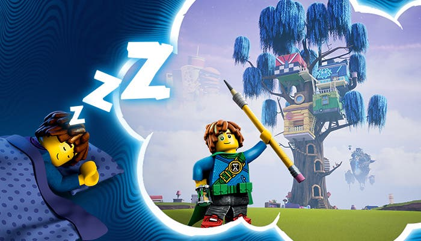
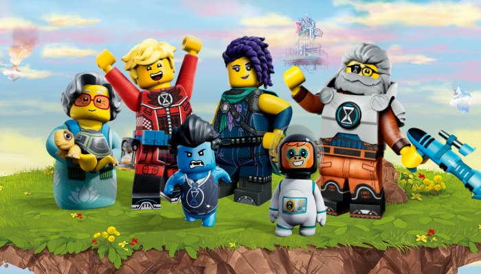
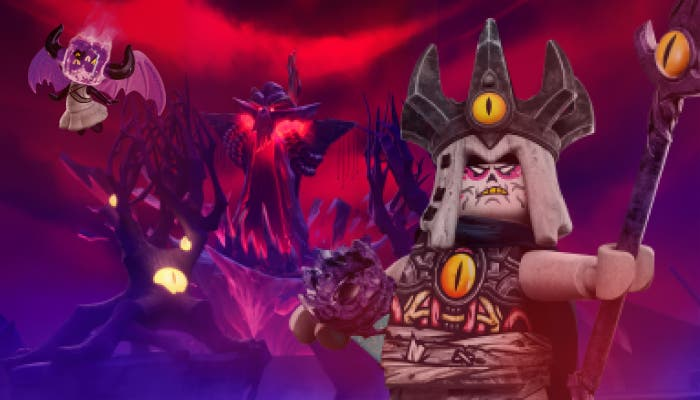

WE ARE SUPER COMPANY
The best order
UP
Створення LEGO® DREAMZzz™...
LEGO DREAMZzz — це грандіозний фантастичний творчий проєкт. У центрі уваги — група
звичайних дітей,
які дізнаються, що світ сновидінь не тільки реальний, але й зберігає геть усі сни
кожного з нас! Матео,
Іззі, Купер і Лоґан проводять ночі у світі сновидінь, рятуючи дітей від злого Короля
жахіть...
Набори LEGO DREAMZzz містять інструкції з будування з ілюстраціями в стилі коміксів, що
занурюють дітей
в історію та надають їм повну свободу вибору щодо завершального етапу будування. Лише
кубики, буклет і ваші діти.
>
З чого починався проєкт LEGO DREAMZzz?
Наша нова тема розроблялася з 2019 року і наразі є найбільш досліджуваною в нашій
історії.
За ці 3,5 роки ми опитали понад 30 000 дітей і покупців щодо буквально всього: від
сюжетного наповнення та ігрового досвіду до інструкцій із будування на основі історії та
продуктів. Це був неймовірно корисний процес, але ж і неймовірно складний (спробуйте
зберегти щось у СУВОРІЙ таємниці, розповідаючи про це 30 000 людей...)
Завдяки дослідженням ми дізналися, що сни допомагають дітям розвивати свою творчість
та уяву без обмежень, адже вві сні можливо все.
Дві третини дітей, з якими ми говорили, описали сни як важливий спосіб розкрити свій
творчий потенціал, а також упоратися зі складними емоціями.
Перемотуємо вперед, до народження LEGO DREAMZzz...
>
Якою є історія LEGO DREAMZzz?
У центрі нашої історії — група учнів середніх класів, які після однієї зловісної
ночі розкривають давню таємницю існування світу сновидінь.
Так, мабуть, найважливіше, що потрібно знати про LEGO DREAMZzz, — це те, що світ
сновидінь існує. Це місце, зібране з різноманітних просторів, які чекають на
дослідників: від футуристичного Кіберцарства до неймовірно солодкого Цукеркового
царства.
Кожен із них рясніє неймовірними створіннями, яких могла створити лише
безмежність снів. І все, що ви колись бачили вві сні (хоч, може, цього й не
пам'ятаєте), насправді існує в тому світі. І це чудова новина!
Проте в будь-якій хорошій історії завжди є й поганці. Світу сновидінь загрожує
Король жахіть і його армія Грімспаунів, які спотворюють сни дітей. Це кошмари, які
хочуть захопити світ сновидінь... і світ наяву теж...
Але повернімося до наших героїв...
Удень вони живуть тими ж викликами й негараздами, що і всі інші діти. Шкільні
драми, проблеми з друзями, домашні завдання — усе це добре знайоме кожній дитині.
Уночі ж їхнє життя стає геть нетиповим. Матео, Іззі та їхні друзі повинні
врятувати безтурботних сновидців і здолати Короля жахіть, опанувавши мистецтво
снотворчості в світі сновидінь. Вони мають зібрати все своє натхнення, щоб уві сні
силою уяви створювати речі, інструменти, транспортні засоби, супутників — що
завгодно.
Це процес, який вимагає від дітей віри в свої здібності та подолання кожен своїх
обмежень. Наприклад, імпульсивність Іззі, перфекціонізм Купера чи страх осуду Матео.
І, звичайно, діти ростуть як майстри й творці у світі сновидінь, і так само вони
розвивають свої людські якості в реальному світі.
>
А як щодо наборів?
Як ви вже, певно, зрозуміли, тема LEGO DREAMZzz — це не про один, а про два нових світи: реальний світ наяву і фантастичний світ сновидінь.
Кожен набір містить найкраще з обох світів, змішуючи різні захоплення. Так створюються моделі, які не схожі на жоден інший набір LEGO; вони спонукають дітей обирати, що саме будувати.
Набори заохочують будівельників діяти так само, як це роблять герої серіалу: брати щось, що вже існує, і поєднувати це з чимось абсолютно новим та унікальним. Наприклад, фудтрак пані Кастільйо, який у світі сновидінь поєднується з її домашньою черепахою!
Для LEGO DREAMZzz ми змінили структуру наших інструкцій із будування. Близько 80% моделі LEGO DREAMZzz можна завершити, дотримуючись інструкцій. Проте тепер цей розділ виглядає майже як комікс, з ілюстраціями, які надихають дітей будувати разом з історією. У кожній інструкції з будування є пункт, що дозволяє дитині самій обирати, як завершити набір.
За задумом діти мають налаштуватися на те, що під час гри вони постійно змінюватимуть свої моделі. Як тоді, коли Матео знадобився мотоцикл у світі сновидінь, тож він перетворив на нього свого липкого компаньйона Z-Blob.
Ілюстрації та продуманий процес будування надихнуть дітей на виконання місій і налаштують на розв'язання проблем. Так вони зможуть по-справжньому кинути собі виклик і розсунути межі творчості.
Безперечний плюс LEGO DREAMZzz: кожен набір містить цілу низку захоплень — уперше для готових наборів LEGO.
Ваша дитина любить тварин, транспортні засоби, космос, архітектуру або... ну... ви зрозуміли...? Хай там як, вона матиме можливість збудувати це з наборами LEGO DREAMZzz.
Бачити сни — притаманно всім, сни є в кожного, і саме тому LEGO DREAMZzz залучає всіх дітей до участі, не залишаючи жодної дитини поза увагою.
Відвідайте сторінку «Про нас», щоб познайомитися ближче з персонажами, історіями та наборами.
До зустрічі у світі сновидінь! (Якщо побачите Короля жахіть, скажіть йому, що нас немає...)